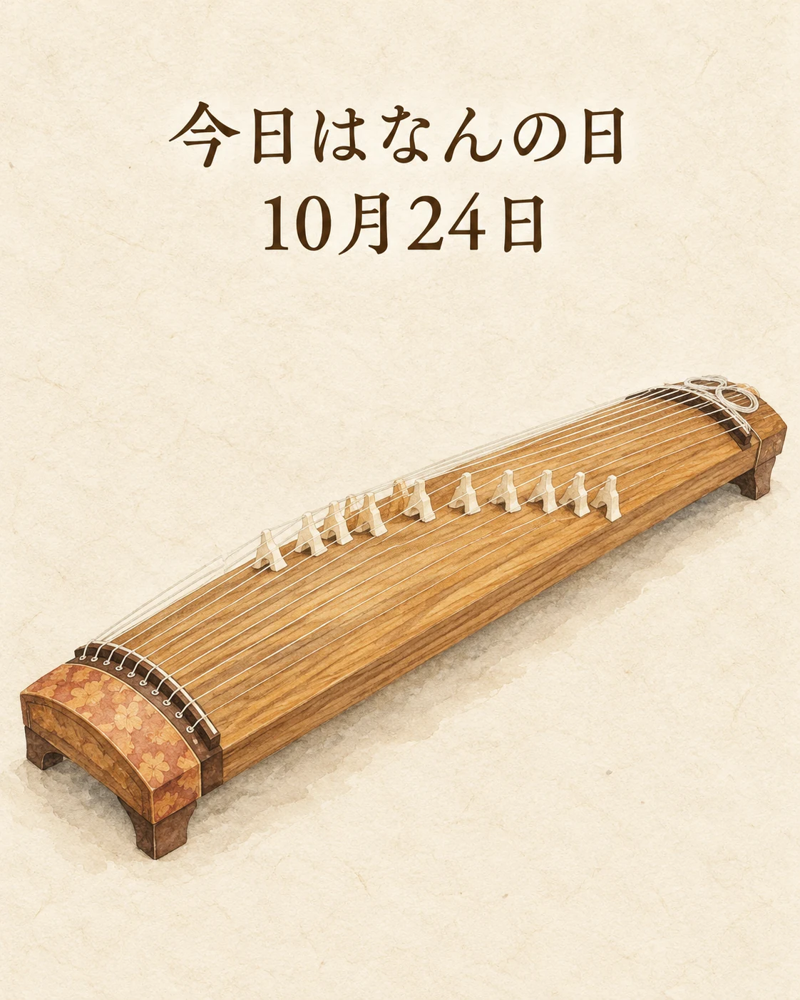
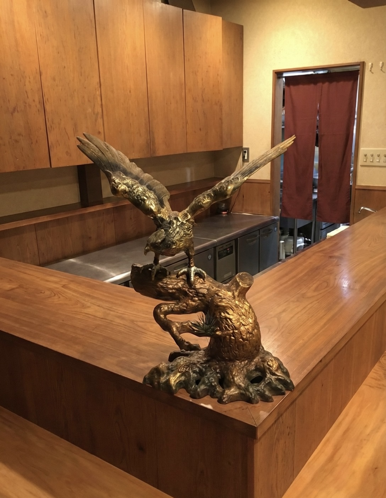
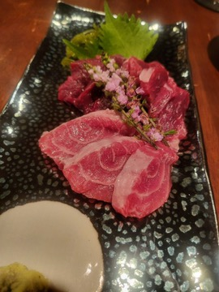
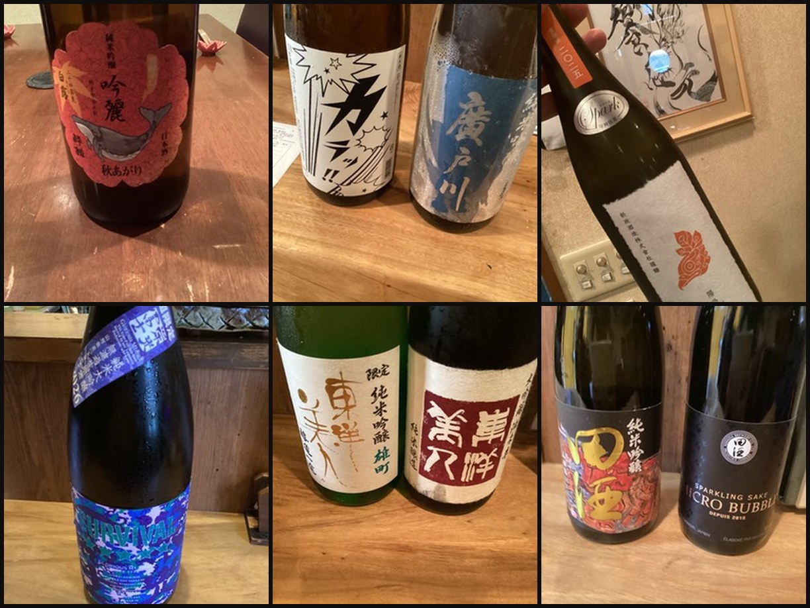
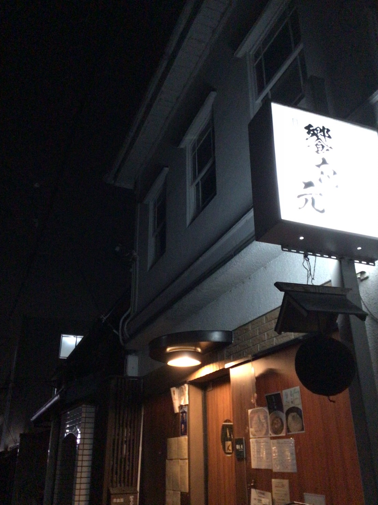

饗応 元 KYOUOU HAJIME
SCROLL ↓FOOD, SAKE & A LITTLE FREEDOM
和の心に、
遊びごころを。
和食をベースにした料理と、
日本酒、ウイスキー、焼酎、ワイン。
一皿にも、一杯にも、出会う愉しさを。

01 / CUISINE
料理を愉しむ
↗和食を土台に、その一皿らしく。

02 / SAKE & MORE
一献を選ぶ
↗酒匠・唎酒師の店主と、お酒の話を。

03 / OUR PLACE
丸太町の夜へ
↗小さな灯りを目印に。
写真はこれまでの料理・お酒の一例です。現在の内容は料理一覧や店頭でご確認ください。
JOURNAL
饗応 元の、読みもの。
RESERVATION & ACCESS
ご予約・店舗案内
アラカルトのお席のみ・コースとも電話でご予約いただけます。WEBではお席のみ、または掲載中のコースを選べます。当日や遅い時間のご相談はお電話ください。
アラカルトのお席予約
電話、または「お席のみWEB予約」から。予約なしの最終入店は23:00です。23:00までの電話予約なら、アラカルトで営業状況に応じて最長翌2:00まで対応します。
コースは2日前まで
電話、または「コースWEB予約」から掲載中のコースをお選びください。仕入れと仕込みのため、ご来店日の2日前までにご予約ください。
18:00開店・最終入店23:00
23:00までの電話予約等で、ご予約・営業状況に応じて最長翌2:00まで対応します。
- 店名
- 饗応 元（キョウオウ ハジメ）
- 営業時間
- 18:00開店・最終入店23:00
23:00までの電話予約等で、ご予約・営業状況に応じて最長翌2:00まで対応 - 電話受付
- 当日のご予約は23:00まで
075-600-0511 - 定休日
- 不定休（日曜休業あり）
- 住所
- 〒604-0864
京都府京都市中京区両替町通夷川上る松竹町135-1 - アクセス
- 地下鉄「丸太町駅」4・5番出口より徒歩3分